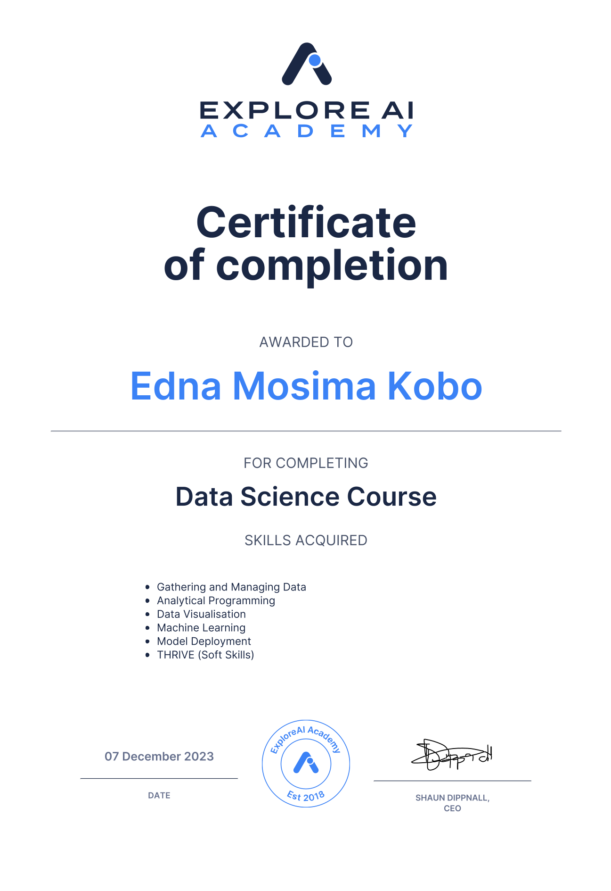

Data Analyst
Data Analyst focused on identifying what drives sales performance, operational efficiency, and customer outcomes. Worked with operational, survey, and sales opportunity data to uncover performance gaps, improve visibility into business processes, and support decision-making through SQL, Python, and Power BI. Built reporting and analytical solutions across telecommunications and sales environments, including win/loss analysis and customer feedback insights.
Telkom – Openserve | 2024 — Present
Managed quotation processing and LMID site verification within a high-volume telecommunications environment, ensuring service locations and operational data were accurately validated. Analysed customer survey feedback and operational reporting data in Power BI to identify service performance gaps, support regional visibility, and improve decision-making across teams.
BCX | 2023
Built a win/loss analysis dashboard to evaluate sales opportunity outcomes and identify factors influencing deal performance. Analysed opportunity pipeline data that revealed a 47.49% closed-won rate and highlighted patterns linked to a 20.53% reduction in opportunity loss.
Explore AI Academy | 2023
Analysed subscription billing and revenue data to identify churn drivers, revenue leakage, and factors impacting revenue stability. Built insights focused on improving visibility into customer retention and recurring revenue performance.
Evaluated digital campaign and user engagement data to identify high-performing creatives, optimise marketing funnel performance, and improve understanding of conversion behaviour across campaigns.
